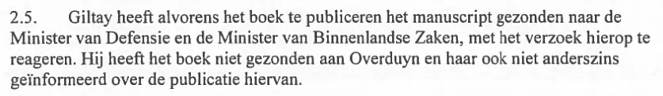
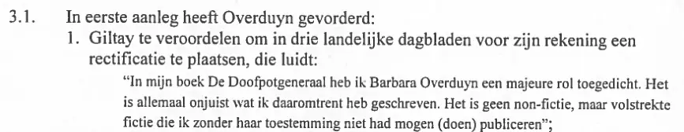
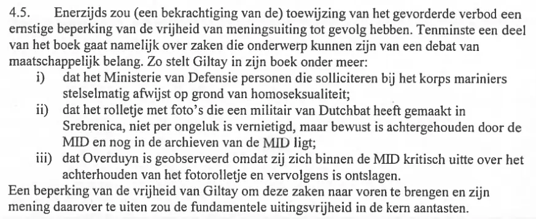
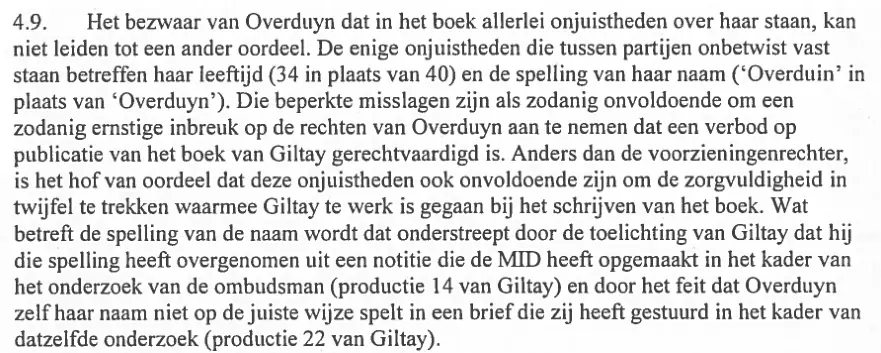
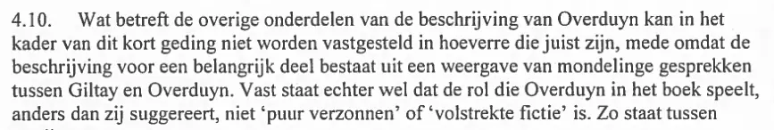
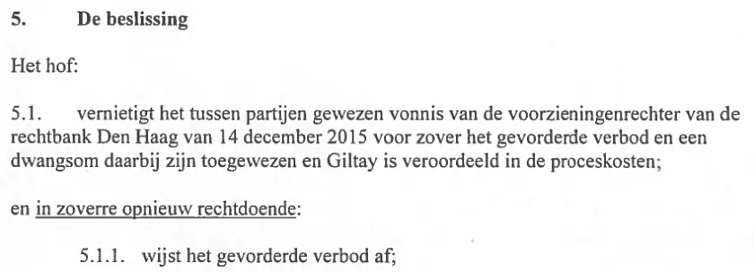

Prueba · Resolución judicial
Tribunal de Apelación de La Haya, sentencia del 12 de abril de 2016 (ECLI:NL:GHDHA:2016:870)
El ensayo cita esta sentencia en nueve lugares, referidos a cinco fundamentos distintos, y la biografía del autor en dos; la sección de voces cita además el fallo. Los pasajes figuran a continuación en el orden de la sentencia, cada uno con su propio enlace y un fragmento de la propia página. Se cita la copia certificada, que menciona a las partes por su nombre. La versión de deeplink.
Fundamento 2.5 · El manuscrito se envió a ambos ministros antes de la publicación
«Antes de publicar el libro, Giltay envió el manuscrito a la ministra de Defensa y al ministro del Interior, con la solicitud de que se pronunciaran al respecto». Página 2 de la copia certificada. Hecho establecido por el Tribunal de Apelación y no controvertido entre las partes. Traducido del neerlandés; el texto original figura a continuación.
“Giltay heeft alvorens het boek te publiceren het manuscript gezonden naar de Minister van Defensie en de Minister van Binnenlandse Zaken, met het verzoek hierop te reageren.” Texto original

Fundamento 3.1 · Lo que se exigía: una declaración en tres diarios de que lo que él había escrito sobre ella era ficción absoluta
«condenar a Giltay a publicar a su costa, en tres diarios nacionales, una rectificación que diga: “En mi libro De Doofpotgeneraal atribuí indebidamente a Barbara Overduyn un papel de primer orden. Todo lo que escribí al respecto es incorrecto. No es no ficción, sino ficción absoluta, que sin su consentimiento no debería haber publicado (ni hecho publicar)”». Página 3 de la copia certificada, la primera de las tres pretensiones de primera instancia. La jueza de medidas provisionales la desestimó y no se interpuso apelación contra esa desestimación (fundamento 4.1). Traducido del neerlandés; el texto original figura a continuación. De doofpotgeneraal es el título original neerlandés del libro El general del encubrimiento.
“Giltay te veroordelen om in drie landelijke dagbladen voor zijn rekening een rectificatie te plaatsen, die luidt: “In mijn boek De Doofpotgeneraal heb ik Barbara Overduyn een majeure rol toegedicht. Het is allemaal onjuist wat ik daaromtrent heb geschreven. Het is geen non-fictie, maar volstrekte fictie die ik zonder haar toestemming niet had mogen (doen) publiceren”” Texto original

Fundamento 4.5 · La tesis del rollo de película puede ser objeto de un debate de interés general
«Al menos una parte del libro trata, en efecto, de asuntos que pueden ser objeto de un debate de interés general. Así, Giltay sostiene en su libro, entre otras cosas: i) que el Ministerio de Defensa rechaza sistemáticamente, por razón de su homosexualidad, a las personas que solicitan el ingreso en el Cuerpo de Infantería de Marina; ii) que el rollo con las fotos que un militar del Dutchbat tomó en Srebrenica no se destruyó por accidente, sino que el MID lo retuvo deliberadamente y sigue en los archivos del MID; iii) que Overduyn fue vigilada porque dentro del MID se expresó de forma crítica sobre la retención del rollo de película y que después fue despedida. Una restricción de la libertad de Giltay para plantear estos asuntos y expresar su opinión sobre ellos afectaría a la esencia misma de la libertad fundamental de expresión». Página 5 de la copia certificada. El tribunal no establece que las afirmaciones sean ciertas, sino que considera que plantearlas está amparado por la libertad de expresión. Traducido del neerlandés; el texto original figura a continuación.
“Tenminste een deel van het boek gaat namelijk over zaken die onderwerp kunnen zijn van een debat van maatschappelijk belang. Zo stelt Giltay in zijn boek onder meer: i) dat het Ministerie van Defensie personen die solliciteren bij het korps mariniers stelselmatig afwijst op grond van homoseksualiteit; ii) dat het rolletje met foto’s die een militair van Dutchbat heeft gemaakt in Srebrenica, niet per ongeluk is vernietigd, maar bewust is achtergehouden door de MID en nog in de archieven van de MID ligt; iii) dat Overduyn is geobserveerd omdat zij zich binnen de MID kritisch uitte over het achterhouden van het fotorolletje en vervolgens is ontslagen. Een beperking van de vrijheid van Giltay om deze zaken naar voren te brengen en zijn mening daarover te uiten zou de fundamentele uitingsvrijheid in de kern aantasten.” Texto original

Fundamento 4.9 · Las inexactitudes no bastan para poner en duda el rigor del autor
«La objeción de Overduyn de que en el libro figuran toda clase de inexactitudes sobre ella no puede llevar a otra conclusión. Las únicas inexactitudes que constan como no controvertidas entre las partes se refieren a su edad (34 en lugar de 40) y a la grafía de su apellido (“Overduin” en lugar de “Overduyn”). Esos errores limitados no bastan, como tales, para apreciar una vulneración de los derechos de Overduyn tan grave que justifique una prohibición de publicación del libro de Giltay. A diferencia de la jueza de medidas provisionales, el Tribunal de Apelación considera que estas inexactitudes tampoco bastan para poner en duda el rigor con el que Giltay procedió al escribir el libro. En cuanto a la grafía del apellido, así lo subrayan la explicación de Giltay de que tomó esa grafía de una nota que el MID redactó en el marco de la investigación del Defensor del Pueblo (documento 14 de Giltay) y el hecho de que la propia Overduyn no escribe correctamente su apellido en una carta que envió en el marco de esa misma investigación (documento 22 de Giltay)».
Página 6 de la copia certificada. La versión de deeplink.
“Het bezwaar van Overduyn dat in het boek allerlei onjuistheden over haar staan, kan niet leiden tot een ander oordeel. De enige onjuistheden die tussen partijen onbetwist vast staan betreffen haar leeftijd (34 in plaats van 40) en de spelling van haar naam (‘Overduin’ in plaats van ‘Overduyn’). Die beperkte misslagen zijn als zodanig onvoldoende om een zodanig ernstige inbreuk op de rechten van Overduyn aan te nemen dat een verbod op publicatie van het boek van Giltay gerechtvaardigd is. Anders dan de voorzieningenrechter, is het hof van oordeel dat deze onjuistheden ook onvoldoende zijn om de zorgvuldigheid in twijfel te trekken waarmee Giltay te werk is gegaan bij het schrijven van het boek. Wat betreft de spelling van de naam wordt dat onderstreept door de toelichting van Giltay dat hij die spelling heeft overgenomen uit een notitie die de MID heeft opgemaakt in het kader van het onderzoek van de ombudsman (productie 14 van Giltay) en door het feit dat Overduyn zelf haar naam niet op de juiste wijze spelt in een brief die zij heeft gestuurd in het kader van datzelfde onderzoek (productie 22 van Giltay).” Texto original

Fundamento 4.10 · El papel no es «puramente inventado» ni «ficción absoluta»
«Sin embargo, sí está establecido que el papel que Overduyn desempeña en el libro, contrariamente a lo que ella sugiere, no es “puramente inventado” ni “ficción absoluta”». Página 6 de la copia certificada. Aquí el tribunal refuta la insinuación de Overduyn de que su papel es ficción absoluta. La misma afirmación figuraba en la rectificación que ella solicitó en primera instancia (fundamento 3.1). A continuación, el fundamento 4.10 enumera los hechos en los que la descripción de su papel encuentra apoyo, al menos en parte. Traducido del neerlandés; el texto original figura a continuación.
“Vast staat echter wel dat de rol die Overduyn in het boek speelt, anders dan zij suggereert, niet ‘puur verzonnen’ of ‘volstrekte fictie’ is.” Texto original

Fallo 5.1.1 · Se desestima la prohibición solicitada
«El Tribunal de Apelación: 5.1 revoca la sentencia dictada entre las partes por la jueza de medidas provisionales del Tribunal de Distrito de La Haya el 14 de diciembre de 2015, en la medida en que se estimaron la prohibición solicitada y una multa coercitiva vinculada a ella y se condenó a Giltay en costas; y, resolviendo de nuevo en esa medida: 5.1.1 desestima la prohibición solicitada;» Página 7 de la copia certificada, bajo el encabezado «De beslissing» (la decisión). El resto del fallo trata de las costas y, en lo demás, confirma la sentencia, que ya había desestimado la rectificación solicitada y el anticipo a cuenta de la indemnización. Traducido del neerlandés; el texto original figura a continuación.
“Het hof: 5.1. vernietigt het tussen partijen gewezen vonnis van de voorzieningenrechter van de rechtbank Den Haag van 14 december 2015 voor zover het gevorderde verbod en een dwangsom daarbij zijn toegewezen en Giltay is veroordeeld in de proceskosten; en in zoverre opnieuw rechtdoende: 5.1.1. wijst het gevorderde verbod af;” Texto original

Por qué importa este documento
El 12 de abril de 2016, el Tribunal de Apelación de La Haya revocó tanto la prohibición total de El general del encubrimiento como la prohibición de hablar impuesta al autor. En el fundamento 4.9 consideró que las dos únicas inexactitudes no controvertidas, una edad y la grafía de un apellido, tampoco bastaban para poner en duda el rigor con el que el autor había procedido al escribir el libro.
La demandante, una antigua empleada del Servicio de Inteligencia Militar (MID), había exigido además que Giltay declarara en tres diarios nacionales que lo que había escrito sobre ella era ficción absoluta. El tribunal estableció que el papel de ella en el libro no es «puramente inventado» ni «ficción absoluta», y desestimó la prohibición solicitada.
Procedencia
- Documento
- Sentencia de apelación en un procedimiento de medidas provisionales
- Órgano jurisdiccional
- Tribunal de Apelación de La Haya, sección de Derecho Civil
- Fecha
- 12 de abril de 2016, pronunciada en audiencia pública
- Número de expediente
- 200.183.987/01
- Número de expediente del Tribunal de Distrito
- C/09/497903 / KG ZA 15/1556
- ECLI
- ECLI:NL:GHDHA:2016:870
- Partes
- El apelante, el autor, contra la apelada, una antigua empleada del Servicio de Inteligencia Militar (MID)
- Abogados
- J.G.J. van Groenendaal, Ámsterdam, por el apelante; R.F. Thunnissen, La Haya, por la apelada
- Magistrados
- P.H. Blok, G. Dulek-Schermers y H.J.M. Burg
- Asunto
- Derecho de los medios de comunicación; solicitud de prohibición de la reimpresión del libro El general del encubrimiento; libertad de expresión frente al derecho al respeto de la vida privada
- Resolución recurrida
- Jueza de medidas provisionales del Tribunal de Distrito de La Haya, 14 de diciembre de 2015
- Referencias
- Fundamentos 2.5, 3.1, 4.5, 4.9 y 4.10; fallo 5.1.1
- Idioma
- Neerlandés; traducción no oficial al español: dedoofpotgeneraal.
nl/ doc/ arrest-es.pdf - Publicado en
- Rechtspraak.nl, ECLI:NL:GHDHA:2016:870, en forma anonimizada; NJF 2016/242; RAV 2016/75; IR 2016/92
- Conservado por
- Archivo del autor (copia); la versión anonimizada, en el Consejo del Poder Judicial de los Países Bajos, deeplink.
rechtspraak. nl/ uitspraak? id= ECLI: NL: GHDHA: 2016: 870 - Véase también
- Demanda de Barbara Overduyn contra Giltay, 2015Tribunal de Distrito de La Haya, sentencia del 14 de diciembre de 2015 (ECLI:NL:RBDHA:2015:15050)
Citado en:
- el ensayo «La prohibición cayó, el libro quedó en pie» en los capítulos (1) «Un precedente único», (3) «Lo que revela el libro: el encubrimiento en torno a Srebrenica», (6) «Tres casos», (7) «Ninguna respuesta sobre el fondo» y (11) «Poner fin al silencio sobre Srebrenica» y en las diapositivas «Tribunal de Apelación de La Haya · 2015–2016» y «Hasta la fecha» de la presentación «La historia en el mapa»
- la sección de voces bajo el epígrafe «Victoria judicial»
- la biografía del autor.
Documento: https://
Modificado por última vez el 13 de septiembre de 2026, consultado el 27 de noviembre de 2026.

Esta página es una ficha de prueba del libro El general del encubrimiento de Edwin Giltay y del sitio web que lo acompaña.